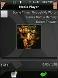

QtMoko packages
Themes
Faenqo theme

Faenqo is nice theme for your phone
Asthromod theme

Asthromod is another nice theme for your phone
Multimedia
MP3 codecs. You need to restart after installing this package.
Faenqo is nice theme for your phone
Asthromod is another nice theme for your phone
MP3 codecs. You need to restart after installing this package.